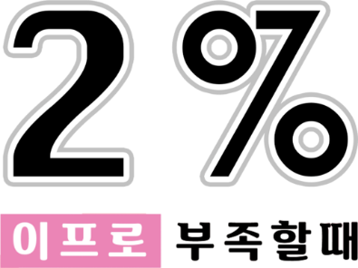
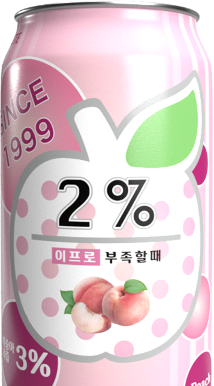
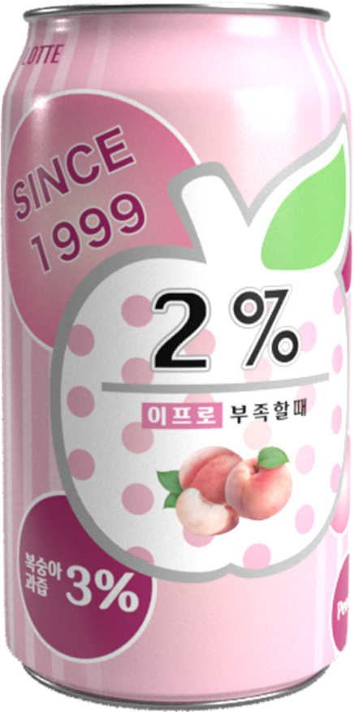
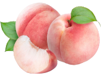
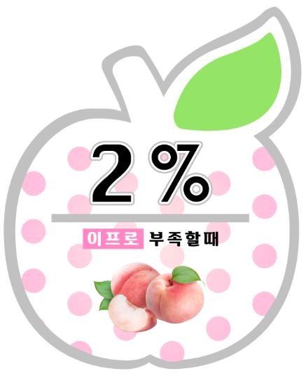
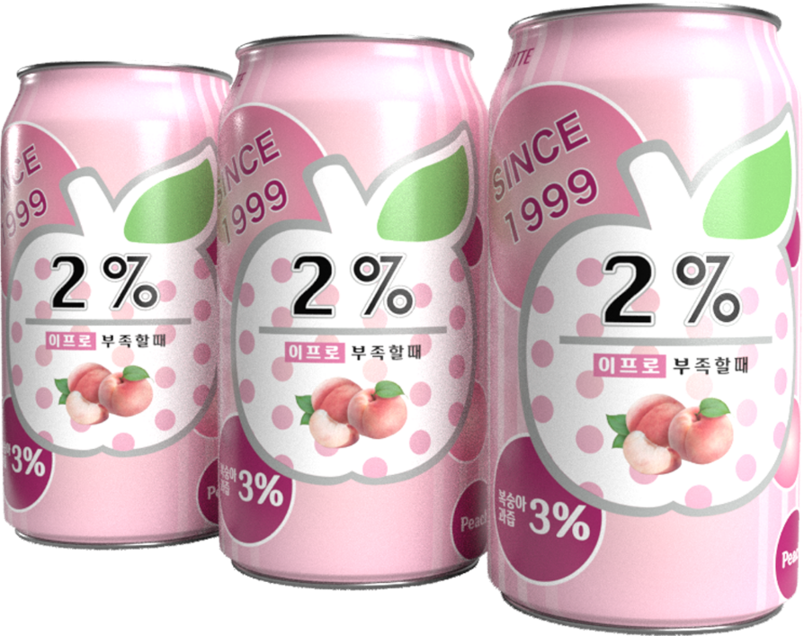
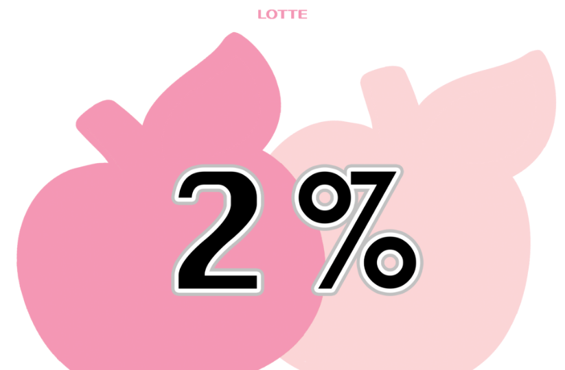

인체의 수분 중 2% 만 부족해도 우리는 심한 갈증을 느끼게 됩니다.
여기서 유래된 이름의 “2% 부족할 때”는 과즙이 들어있어 기분까지
산뜻하게 해주고 물처럼 깔끔하게 마실 수 있는 미과즙 음료입니다.
1999년 출시 이후 “날 물로 보지마”, “사랑은 언제나 목마르다” 등
수많은 유행어를 탄생시키며 “물보다 맛있는 달콤한 미과즙 워터”
로 꾸준하게 소비자의 사랑을 받고 있는 브랜드입니다.


